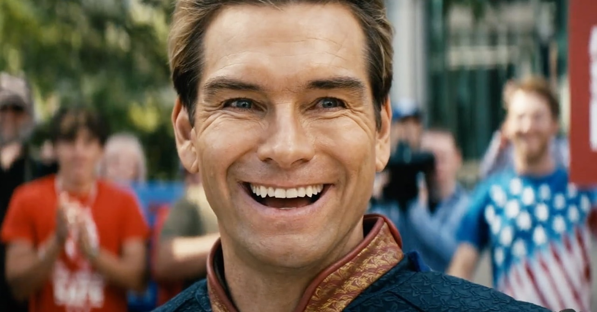
Capitão Pátria
O supe mais forte e mais perigoso da Vought.
Conheça quem faz parte dessa história

O supe mais forte e mais perigoso da Vought.
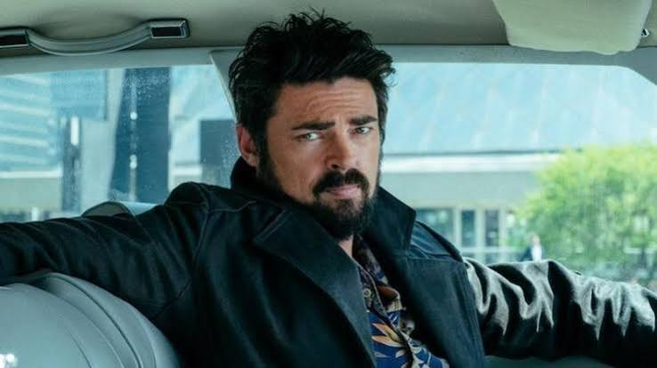
Lider dos Boys, disposto a tudo para acabar com os supes.
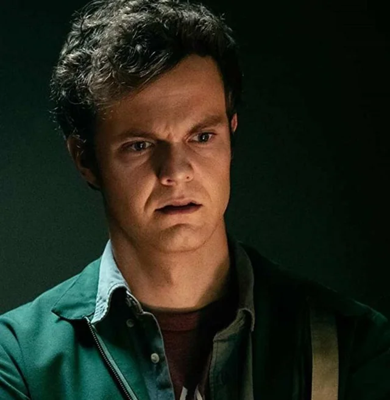
Um cara comum que entra para os Boys apos uma tragedia pessoal.
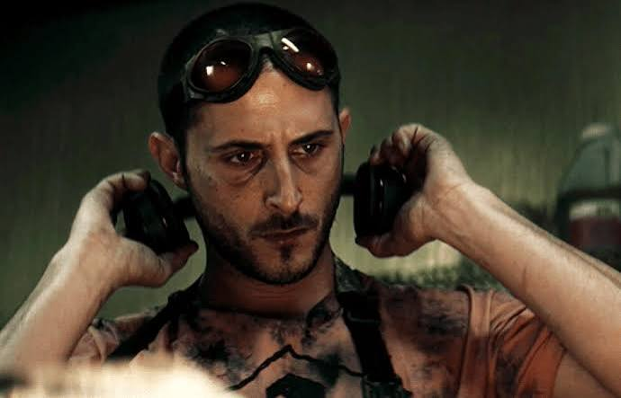
Especialista em armas e quimica do grupo.
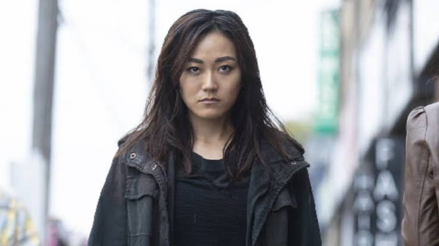
Lutadora forte e leal, se comunica por linguagem de sinais.
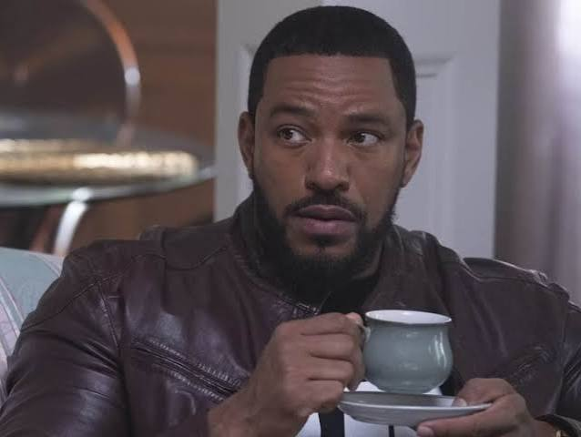
Estrategista do grupo, sempre com um plano na cabeca.
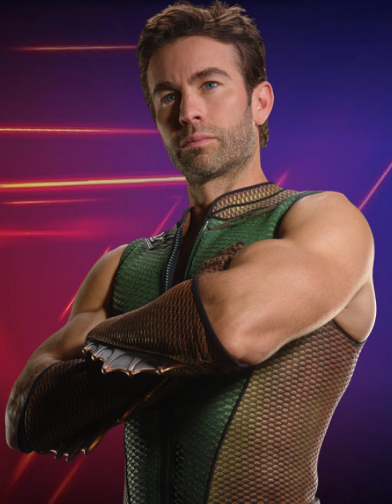
Supe com poderes ligados a agua, sempre em busca de respeito.
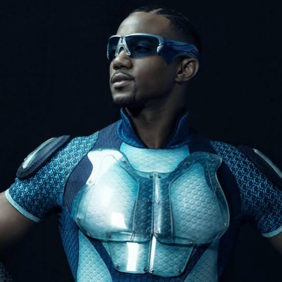
O supe mais rapido do mundo.
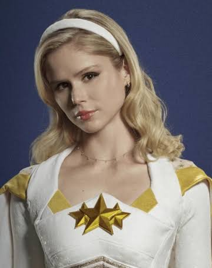
Supe que tenta manter seus valores dentro da Vought.
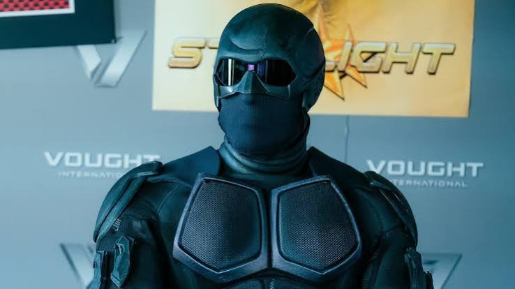
Supe silencioso e misterioso, extremamente letal.
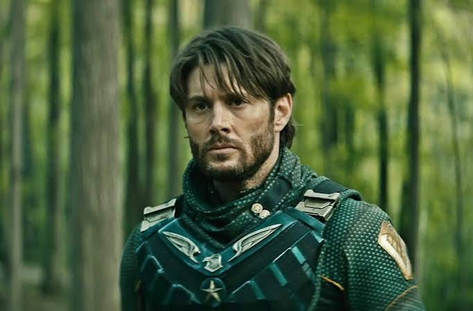
O primeiro supe da Vought, com um passado violento.
Politica com um segredo perigoso escondido.